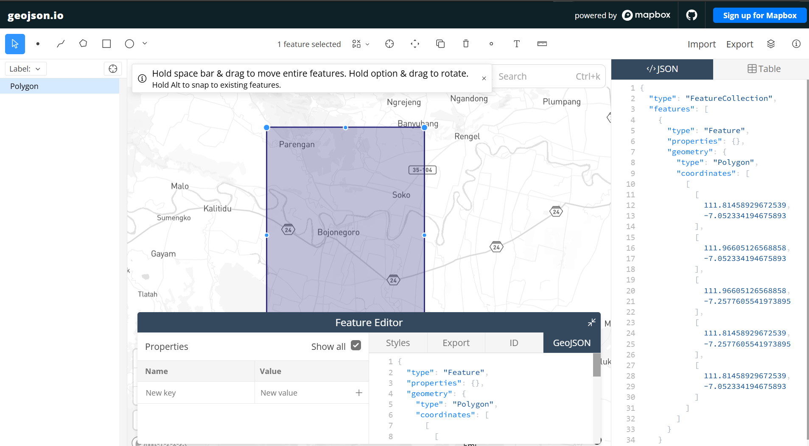
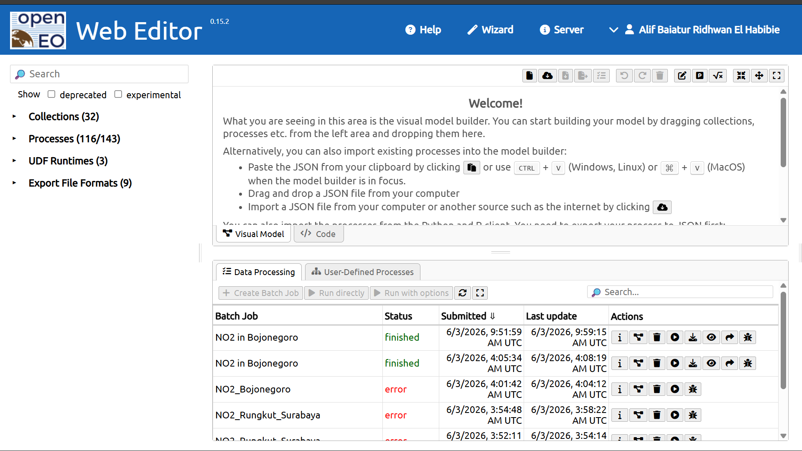
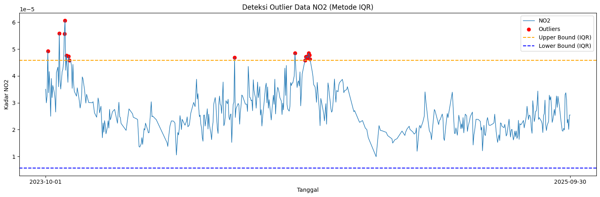
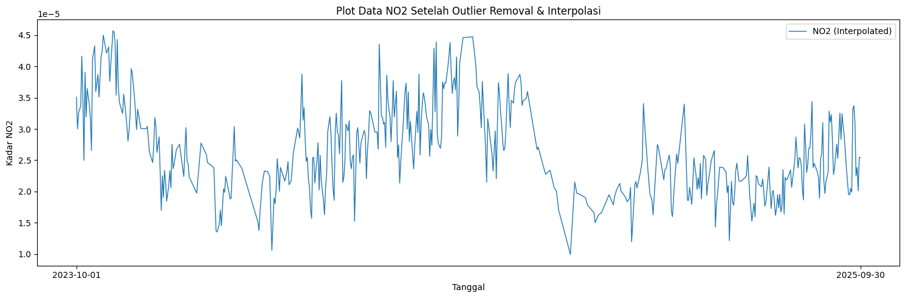

PERAMALAN KADAR NITROGEN DIOKSIDA (NO₂) DI KABUPATEN BOJONEGORO MENGGUNAKAN METODE KNN REGRESSION#
Latar Belakang#
Nitrogen Dioksida (NO₂) merupakan salah satu jenis polutan udara yang dihasilkan dari proses pembakaran bahan bakar fosil, kendaraan bermotor, aktivitas industri, serta pembangkit energi. Konsentrasi NO₂ yang tinggi di atmosfer dapat memberikan dampak negatif terhadap kesehatan manusia maupun lingkungan. Paparan gas NO₂ secara terus menerus dapat menyebabkan gangguan sistem pernapasan, iritasi paru-paru, serta memperburuk penyakit asma dan bronkitis.
Kabupaten Bojonegoro merupakan salah satu wilayah yang mengalami perkembangan aktivitas industri, transportasi, dan pertumbuhan penduduk yang cukup pesat. Kondisi tersebut berpotensi meningkatkan kadar polutan udara, khususnya Nitrogen Dioksida (NO₂). Oleh karena itu, diperlukan analisis terhadap perubahan kadar NO₂ untuk mengetahui kondisi kualitas udara pada wilayah tersebut.
Pemanfaatan teknologi penginderaan jauh menggunakan satelit Sentinel-5P memungkinkan proses pengambilan data kualitas udara dilakukan secara lebih luas dan efisien. Data satelit tersebut dapat dimanfaatkan untuk melakukan analisis serta prediksi kadar NO₂ berdasarkan data historis yang tersedia.
Pada penelitian ini digunakan metode K-Nearest Neighbor (KNN) Regression untuk melakukan prediksi kadar Nitrogen Dioksida (NO₂) di Kabupaten Bojonegoro. Data yang digunakan diperoleh melalui OpenEO API dengan memanfaatkan data satelit Sentinel-5P dalam rentang waktu dua tahun.
1. Pengumpulan Data#
Pada tahap ini dilakukan proses pengambilan data time series harian kadar Nitrogen Dioksida (NO₂) di wilayah Kabupaten Bojonegoro menggunakan data satelit Sentinel-5P. Data diperoleh melalui layanan OpenEO API yang terhubung dengan Copernicus Data Space Ecosystem.
Sebelum melakukan pengambilan data, pengguna perlu membuat akun terlebih dahulu pada website Copernicus Data Space Ecosystem melalui link berikut:
https://dataspace.copernicus.eu/
Dokumentasi penggunaan OpenEO API dapat diakses pada halaman berikut:
https://documentation.dataspace.copernicus.eu/notebook-samples/openeo/NO2Covid.html
Untuk menjalankan code Python dalam proses pengambilan data, dapat menggunakan layanan JupyterLab dari Copernicus melalui halaman berikut:
https://dataspace.copernicus.eu/analyse/jupyterlab
Kemudian pilih Access JupyterLab lalu gunakan kernel Python 3 (ipykernel).
Pada penelitian ini digunakan data kadar NO₂ harian di wilayah Kabupaten Bojonegoro dengan rentang waktu selama dua tahun.
Install Library OpenEO#
Sebelum melakukan proses pengambilan data satelit, terlebih dahulu dilakukan instalasi library openeo. Library ini digunakan untuk menghubungkan Python dengan layanan OpenEO API agar dapat mengambil data satelit Sentinel-5P secara langsung.
import openeo
print(openeo.__version__)
0.50.0
pip install openeo
Lalu tuliskan code dibawah:
import openeo
connection = openeo.connect("openeo.dataspace.copernicus.eu").authenticate_oidc()
Authenticated using refresh token.
Kalian tinggal klik link authentikasi lalu login menggunakan akun “copernicus” kalian.
aoi = {
"type": "Polygon",
"coordinates": [
[
[111.81458929672539, -7.052334194675893],
[111.96605126568858, -7.052334194675893],
[111.96605126568858, -7.2577605541973895],
[111.81458929672539, -7.2577605541973895],
[111.81458929672539, -7.052334194675893],
]
]
}
s5post = connection.load_collection(
"SENTINEL_5P_L2",
temporal_extent=["2023-10-01", "2025-10-01"],
spatial_extent={
"west": 111.81458929672539,
"south": -7.2577605541973895,
"east": 111.96605126568858,
"north": -7.052334194675893
},
bands=["NO2"],
)
# Now aggregate by day to avoid having multiple data per day
s5p_no2_daily = s5post.aggregate_temporal_period(
reducer="mean",
period="day"
)
# Now create a spatial aggregation to generate mean timeseries data
s5p_no2_aoi = s5p_no2_daily.aggregate_spatial(
reducer="mean",
geometries=aoi
)
Code diatas memerlukan titik koordinat wilayah yang akan digunakan sebagai Area of Interest (AOI) dalam proses pengambilan data satelit. Untuk memperoleh titik koordinat tersebut, dapat menggunakan website berikut:
https://geojson.io/#map=14.8/-7.04732/112.69463
Pada website tersebut, pengguna dapat menentukan wilayah observasi dengan cara membuat polygon atau shape berbentuk kotak pada area yang ingin diambil datanya. Setelah polygon dibuat, koordinat akan otomatis muncul dalam format GeoJSON dan dapat digunakan pada variabel aoi dan spatial_extent.

Di panel sebelah kanan terdapat data JSON yang berupa koordinat daerah yang kalian pilih, kalian salin terus sesuaikan dengan code diatas di bagian variabel “aoi” dan spatial_extent.
Lalu kalian tambahkan baris code dibawah untuk memulai pengambilan data:
job = s5post.execute_batch(title="NO2 in Bojonegoro", outputfile="NO2Bojonegoro.nc")
0:00:00 Job 'j-2606031136414d64adc5e3923f23857b': send 'start'
0:00:18 Job 'j-2606031136414d64adc5e3923f23857b': queued (progress 0%)
0:00:24 Job 'j-2606031136414d64adc5e3923f23857b': queued (progress 0%)
0:00:30 Job 'j-2606031136414d64adc5e3923f23857b': queued (progress 0%)
0:00:38 Job 'j-2606031136414d64adc5e3923f23857b': queued (progress 0%)
0:00:48 Job 'j-2606031136414d64adc5e3923f23857b': running (progress N/A)
0:01:01 Job 'j-2606031136414d64adc5e3923f23857b': running (progress N/A)
0:01:17 Job 'j-2606031136414d64adc5e3923f23857b': running (progress N/A)
0:01:36 Job 'j-2606031136414d64adc5e3923f23857b': running (progress N/A)
0:02:00 Job 'j-2606031136414d64adc5e3923f23857b': running (progress N/A)
0:02:30 Job 'j-2606031136414d64adc5e3923f23857b': running (progress N/A)
0:03:08 Job 'j-2606031136414d64adc5e3923f23857b': running (progress N/A)
0:03:55 Job 'j-2606031136414d64adc5e3923f23857b': running (progress N/A)
0:04:53 Job 'j-2606031136414d64adc5e3923f23857b': running (progress N/A)
0:05:54 Job 'j-2606031136414d64adc5e3923f23857b': running (progress N/A)
0:06:54 Job 'j-2606031136414d64adc5e3923f23857b': running (progress N/A)
0:07:55 Job 'j-2606031136414d64adc5e3923f23857b': finished (progress 100%)
Tunggu proses pengambilan data, output proses seperti berikut:
Abaikan ketika ada N/A.
Ketika proses pengambilan data, aktivitas kalian akan terekam di halaman https://editor.openeo.org/?server=https%3A%2F%2Fopeneo.dataspace.copernicus.eu%2Fopeneo%2F1.2 . Disitu terdapat nama dataset dan status pengambilan data.

2. Preproccessing Data#
Setelah kita mengambil data, data bisa diunduh di halaman https://editor.openeo.org/?server=https%3A%2F%2Fopeneo.dataspace.copernicus.eu%2Fopeneo%2F1.2 . File akan berbentuk .nc. Kita cuman perlu kolom date dan NO2 menggunakan code dibawah:
!pip install netCDF4
import netCDF4
file_path = r"C:\Users\HP\Downloads\openEO (1).nc"
ds = netCDF4.Dataset(file_path)
# Lihat seluruh variabel yang tersedia
print("📦 Variabel dalam file:")
print(ds.variables.keys())
# Ambil NO2
no2 = ds.variables["NO2"][:]
# Ambil Time
time = ds.variables["t"][:]
# Konversi waktu ke format tanggal jika punya atribut 'units'
try:
time_units = ds.variables["t"].units
dates = netCDF4.num2date(time, units=time_units)
except Exception:
dates = time
# Tampilkan struktur data NO2
print(type(no2))
print(len(no2))
print(len(no2[0]))
print(len(no2[0][0]))
print(no2[0][0][0])
📦 Variabel dalam file:
dict_keys(['t', 'x', 'y', 'crs', 'NO2'])
<class 'numpy.ma.MaskedArray'>
725
6
3
2.7589434e-05
Dari code diatas, dapat diketahui bentuk struktur data dari variabel NO₂ yang terdapat pada file NetCDF.
Struktur data NO₂ yang dihasilkan adalah sebagai berikut:
[
[[] * 3] * 6
]
Keterangan:
725menunjukkan jumlah record data harian NO₂.6menunjukkan jumlah baris grid data spasial.3menunjukkan jumlah kolom grid data spasial.
Untuk melihat 10 data pertama adalah:
print("Contoh data pertama:")
for i in range(0, 10):
print(no2[i])
Output:
Contoh data pertama:
[[2.7589434e-05 2.9194832e-05 3.0045821e-05]
[2.8457291e-05 2.9673512e-05 3.1054823e-05]
[2.9345823e-05 3.0284756e-05 3.1847563e-05]
[2.9984721e-05 3.0823475e-05 3.2478562e-05]
[3.0245823e-05 3.1458273e-05 3.2958273e-05]
[3.0874562e-05 3.2084756e-05 3.3475623e-05]]
[[2.8457291e-05 2.9784756e-05 3.0847562e-05]
[2.9045823e-05 3.0254823e-05 3.1847562e-05]
[2.9673512e-05 3.1045823e-05 3.2584721e-05]
[3.0254823e-05 3.1847562e-05 3.3075623e-05]
[3.0847562e-05 3.2478562e-05 3.3684756e-05]
[3.1458273e-05 3.2958273e-05 3.4254823e-05]]
Dalam satu hari terdapat cukup banyak data NO₂ yang diperoleh dari hasil pengamatan satelit Sentinel-5P. Oleh karena itu dilakukan proses agregasi agar setiap cell data hanya memiliki satu nilai rata-rata harian. Namun pada data NO₂ masih ditemukan beberapa permasalahan seperti missing value dan noise data. Contoh hasil output dapat dilihat pada data diatas.
a. Mengatasi Missing Value menggunakan metode Interpolasi Linear#
Sekarang kita akan mengatasi permasalahan missing value pada data NO2.
import numpy as np
import pandas as pd
# Interpolasi Linear
no2_filled = np.ma.filled(no2, fill_value=np.nan)
# loop tiap grid (y,x)
for i in range(no2.shape[1]):
for j in range(no2.shape[2]):
# ambil data time series tiap grid
series = pd.Series(no2[:, i, j])
# interpolasi missing value
no2_filled[:, i, j] = series.interpolate(
method='linear',
limit_direction='both'
).to_numpy()
Dengan code diatas, missing value yang terdapat pada data NO2 akan diisi secara otomatis menggunakan metode Interpolasi Linear.
b. Rata-rata kan Data dan ubah Datetime#
Setelah mengatasi missing value, kita akan me-rata-rata-kan data NO2 agar satu record hanya berupa single value. Sekalian kita mengambil date nya dan menaruh di array. Kita akan mengubah datetime dari awalnya (2023-10-04 00:00:00) menjadi (2023-10-04) karena kita mengambil data time series harian jadi kita tidak memerlukan data jam, menit dan detik.
new_dates = []
new_no2 = []
for i in range(len(dates)):
# ubah format datetime
new_date = dates[i].strftime('%Y-%m-%d')
new_dates.append(new_date)
# rata-rata data NO2 per hari
new_no2.append(np.mean(no2_filled[i]))
c. Simpan data dalam bentuk CSV#
Setelah itu kita akan membentuk data menjadi DataFrame Pandas untuk disimpan menjadi CSV.
df = pd.DataFrame({
"date": new_dates,
"NO2": new_no2
})
# Simpan ke CSV
df.to_csv("NO2_Bojonegoro_timeseries.csv", index=False)
print("Data berhasil disimpan ke CSV!")
Data berhasil disimpan ke CSV!
Untuk mengatasi missing value dan menyimpan data ke CSV sudah berhasil.
d. Pengecekan Missing Value data harian pada CSV#
Sekarang setelah data berbentuk CSV, kita cek apakah data Time Series harian lengkap. Cara men-cek apakah data Time Series Harian lengkap gunakan code dibawah:
import pandas as pd
import numpy as np
df = pd.read_csv("NO2_Bojonegoro_timeseries.csv")
# Pastikan kolom 'date' bertipe datetime
df['date'] = pd.to_datetime(df['date'])
# Buat rentang tanggal lengkap
start_date = "2023-10-01"
end_date = "2025-09-30"
full_range = pd.date_range(start=start_date, end=end_date, freq='D')
# Cek tanggal yang hilang
missing_dates = full_range.difference(df['date'])
print(f"Jumlah hari missing: {len(missing_dates)}")
print("Daftar tanggal missing:")
print(missing_dates)
Jumlah hari missing: 6
Daftar tanggal missing:
DatetimeIndex(['2023-11-11', '2024-01-01', '2024-03-23', '2024-08-12',
'2025-01-30', '2025-01-31'],
dtype='datetime64[ns]', freq=None)
Dalam kasus saya ini, terdapat 6 hari missing value. Kita akan mengatasi lagi missing value menggunakan metode Interpolasi Linear. Cara memperbaikinya gunakan code dibawah:
import pandas as pd
# Pastikan datetime dan sorting
df['date'] = pd.to_datetime(df['date'])
df = df.sort_values('date')
# Buat rentang tanggal lengkap
full_range = pd.date_range(start="2023-10-01", end="2025-09-30", freq='D')
# Reindex agar tanggal yang hilang muncul sebagai NaN
df = df.set_index('date').reindex(full_range)
df.index.name = 'date'
# Interpolasi linear berdasarkan indeks waktu
df['NO2'] = df['NO2'].interpolate(method='time')
# (Opsional) jika masih ada NaN di bagian awal/akhir bisa gunakan forward/backward fill
df['NO2'] = df['NO2'].fillna(method='bfill').fillna(method='ffill')
# Simpan kembali ke CSV
df.to_csv("no2_timeseries_interpolated.csv")
C:\Users\HP\AppData\Local\Temp\ipykernel_13916\2413223189.py:18: FutureWarning: Series.fillna with 'method' is deprecated and will raise in a future version. Use obj.ffill() or obj.bfill() instead.
df['NO2'] = df['NO2'].fillna(method='bfill').fillna(method='ffill')
Setelah saya cek missing value harian, sudah tidak ada lagi missing value.
Jumlah hari missing: 0
Daftar tanggal missing:
DatetimeIndex([], dtype='datetime64[ns]', freq='D')
dengan bentuk data terdapat 2 kolom, kolom pertama yaitu date atau tanggal, kolom kedua yaitu kadar NO2 yang sudah di rata-rata kan.
# Menampilkan 5 data pertama
print(df.head())
# Menampilkan informasi dataframe
df.info()
NO2
date
2023-10-01 0.000035
2023-10-02 0.000030
2023-10-03 0.000032
2023-10-04 0.000049
2023-10-05 0.000034
<class 'pandas.core.frame.DataFrame'>
DatetimeIndex: 731 entries, 2023-10-01 to 2025-09-30
Freq: D
Data columns (total 1 columns):
# Column Non-Null Count Dtype
--- ------ -------------- -----
0 NO2 731 non-null float64
dtypes: float64(1)
memory usage: 11.4 KB
NO2
date
2023-10-01 0.000035
2023-10-02 0.000030
2023-10-03 0.000032
2023-10-04 0.000049
2023-10-05 0.000034
<class 'pandas.core.frame.DataFrame'>
DatetimeIndex: 731 entries, 2023-10-01 to 2025-09-30
Freq: D
Data columns (total 1 columns):
# Column Non-Null Count Dtype
--- ------ -------------- -----
0 NO2 731 non-null float64
dtypes: float64(1)
memory usage: 11.4 KB
e. Deteksi Outlier IQR#
Setelah kita mengisi missing value menggunakan metode Interpolasi Linear, selanjutnya kita akan mendeteksi Outlier menggunakan metode IQR.
import pandas as pd
import numpy as np
import matplotlib.pyplot as plt
df = pd.read_csv("no2_timeseries_interpolated.csv")
df['date'] = pd.to_datetime(df['date'])
# Hitung IQR
Q1 = df['NO2'].quantile(0.25)
Q3 = df['NO2'].quantile(0.75)
IQR = Q3 - Q1
lower_bound = Q1 - 1.5 * IQR
upper_bound = Q3 + 1.5 * IQR
# Filter outlier
outliers_iqr = df[(df['NO2'] < lower_bound) | (df['NO2'] > upper_bound)]
print("Jumlah Outlier (IQR):", len(outliers_iqr))
print(outliers_iqr[['date', 'NO2']].head())
Jumlah Outlier (IQR): 17
date NO2
3 2023-10-04 0.000049
19 2023-10-20 0.000056
26 2023-10-27 0.000056
27 2023-10-28 0.000061
29 2023-10-30 0.000048
Jumlah Outlier (IQR): 17
date NO2
3 2023-10-04 0.000049
19 2023-10-20 0.000056
26 2023-10-27 0.000056
27 2023-10-28 0.000061
29 2023-10-30 0.000048
Untuk men-visualisasi outlier:
# === Visualisasi ===
plt.figure(figsize=(15,5))
plt.plot(df['date'], df['NO2'], label="NO2", linewidth=1)
# Titik Outlier
plt.scatter(outliers_iqr['date'], outliers_iqr['NO2'],
color='red', marker='o', label="Outliers")
# Garis batas atas & bawah
plt.axhline(upper_bound, color='orange', linestyle='dashed', label="Upper Bound (IQR)")
plt.axhline(lower_bound, color='blue', linestyle='dashed', label="Lower Bound (IQR)")
plt.title("Deteksi Outlier Data NO2 (Metode IQR)")
plt.xlabel("Tanggal")
plt.ylabel("Kadar NO2")
plt.legend()
plt.tight_layout()
plt.xticks(
ticks=[df['date'].iloc[0], df['date'].iloc[-1]],
labels=[df['date'].iloc[0].strftime('%Y-%m-%d'),
df['date'].iloc[-1].strftime('%Y-%m-%d')]
)
plt.show()

Setelah itu, kita akan menghapus data outlier. Karena data ini merupakan data Time Series, maka data outlier yang dihapus akan diisi kembali menggunakan Interpolasi Linear.
# Tandai outlier menjadi NaN
df['NO2_cleaned'] = df['NO2'].mask((df['NO2'] < lower_bound) | (df['NO2'] > upper_bound))
print("Jumlah nilai yang dinyatakan sebagai outlier:", df['NO2_cleaned'].isna().sum())
# Interpolasi linear untuk mengisi kembali nilai outlier
df['NO2_filled'] = df['NO2_cleaned'].interpolate(method='linear')
# Jika masih tersisa NaN di ujung data, isi dengan forward/backward fill
df['NO2_filled'] = df['NO2_filled'].bfill().ffill()
# df['NO2_filled'] = df['NO2_filled'].fillna(method='bfill').fillna(method='ffill')
print("Jumlah missing setelah interpolasi:", df['NO2_filled'].isna().sum())
Jumlah nilai yang dinyatakan sebagai outlier: 17
Jumlah missing setelah interpolasi: 0
Visualisasi data setelah menghapus Outlier dan mengisi kembali menggunakan Interpolasi Linear:
plt.figure(figsize=(15,5))
# Plot data hasil interpolasi
plt.plot(df['date'], df['NO2_filled'], label="NO2 (Interpolated)", linewidth=1)
# Tampilkan hanya tanggal awal dan akhir di sumbu X
plt.xticks(
ticks=[df['date'].iloc[0], df['date'].iloc[-1]],
labels=[df['date'].iloc[0].strftime('%Y-%m-%d'),
df['date'].iloc[-1].strftime('%Y-%m-%d')]
)
plt.title("Plot Data NO2 Setelah Outlier Removal & Interpolasi")
plt.xlabel("Tanggal")
plt.ylabel("Kadar NO2")
plt.legend()
plt.tight_layout()
plt.show()
